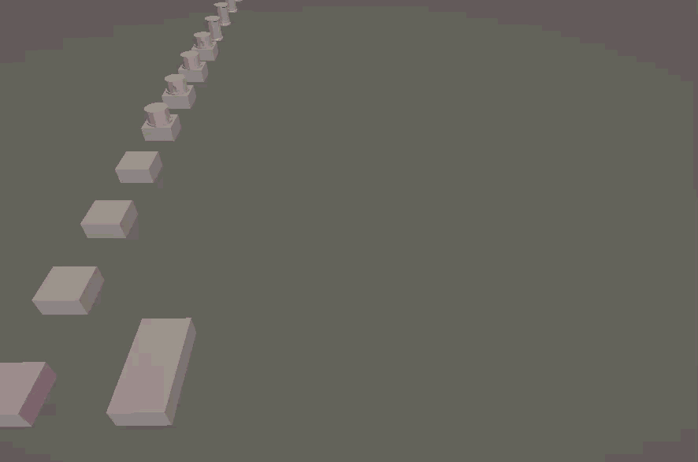
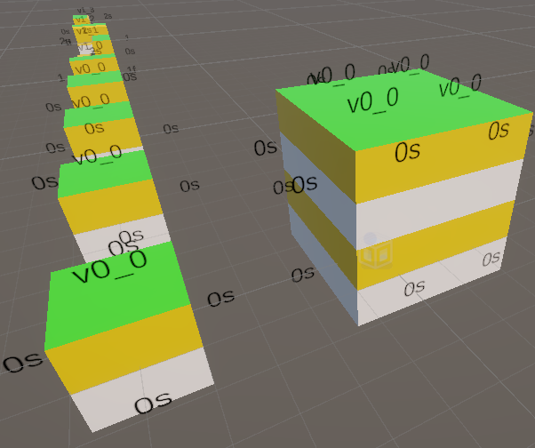

Wave Function Collapse
A PROD224 Project
- Unity
- C#
- Blender
- Proc Gen

Final Outcome
Wave function collapse is a constraint solving program that operates
using nodes with defined sockets.
The sockets tell the program which nodes can connect,
and the available nodes slowly collapse to fill out the 3d grid.
Tutorial Phase
In the tutorial phase, I set up sockets for 2D generation, and set up the code for the generation algorithm.

Creative Phase
In the creative phase, I set up vertical sockets, finally allowing 3D generation.
I created basic 3D nodes, towers, walls, rooves. Weights were used to control the likelyhood of different nodes, and I added pauses between the placement of each element to display the generation.
Further Development
Further development will include more layers put onto the algorithm, with randomly generated points of interest, and the buildings built around them.
After this, it can be used within other projects that require civilization or cities.